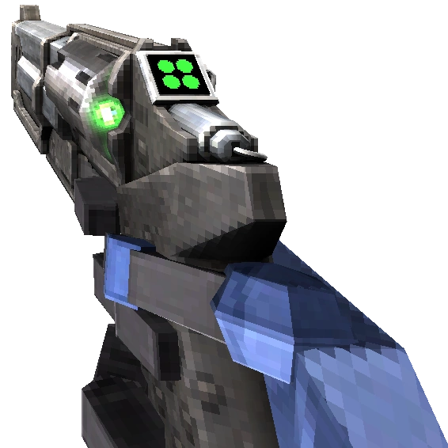

Feedbacker
This is the arm that you start the game with. It can punch through wood planks, and can parry enemy attacks.
Weapons are the main form of damage in Ultrakill. You get them by finding weapons across the levels or buying variants from the terminals at the beginning of each level. Each weapon has a primary fire and an alt fire. The revolver, shotgun, and nailgun have alternate versions that slightly change the mechanics of the weapon. Arms can be found at the end of Limbo and Greed.
This is the arm that you start the game with. It can punch through wood planks, and can parry enemy attacks.
You can find this arm in [1-4: CLAIR DE LUNE] after defeating V2. Holding the punch button will make the Knuckleblaster explode, pushing enemies away. This arm is stronger than the feedbacker, but you cannot parry attacks with it.
This arm can be found after V2's actual death in [4-4: CLAIR DE SOLEIL]. It pulls light enemies towards you, and pulls you towards heavy enemies and hookpoints.
This arm has not been released, as Fraud and Treachery are still in development.
The Piercer is the first weapon that can be obtained in ULTRAKILL and is found in the beginning of [0-1: INTO THE FIRE]. The primary fire shoots a hitscan shot in the direction that you are facing. The alt fire shoots a piercing shot that can go through 3 enemies. It has a 2.5 second cooldown.
This weapon's primary fire is the same as the Piercer. However, the alt fire is replaced by a coin. Pressing alt fire tosses a coin in front of you which can be shot. When shot with any hitscan attack, it will redirect the hitscan towards the nearest enemy’s head. Larger enemies and other coins take priority.
The primary fire for this variant is the same as the piercer and marksman. Instead, the alt fire spins the gun around your finger, gaining speed over time. When used, the shot will ricochet off surfaces. The faster the gun was spinning when fired, the more times the shot would bounce.
The Slab Revolver is the alternate form of the Revolver and can be found in [1-4: CLAIR DE LUNE] after pressing all 4 slabs in Limbo. It changes the primary fire to deal 2 damage, but with a longer cooldown. The same thing applies to all of the alt fires.
The Core Eject Shotgun is found in [0-3: DOUBLE DOWN] or in the secret encounter in [0-2: THE MEATGRINDER]. The primary fire for this weapon shoots a spread of projectiles. The alt fire throws the core of the shotgun in front of you, exploding on contact.
The primary fire is based on the alt fire, as when you use the alt fire, it pumps the shotgun and increases the power of the next shot. Pumping it 3 times makes it explode.
The primary fire for this weapon is the same as the Core Eject Shotgun. However, there is now a chainsaw on your shotgun. It can be revved with alt fire, and when released, it will fly around you on a string. The saw disappears when it returns to you.

The Jackhammer is the alternate form of the shotgun and can be found in [7-2: LIGHT UP THE NIGHT] after pressing all three slabs. Using primary fire pulls back the hammer. The faster you are going when the hammer is released, the more damage you will do. The alt fires work the same.
The Attractor Nailgun can be found in [1-1: HEART OF THE SUNRISE]. Primary fire shoots nails that get lodged into enemies. 100 nails can be stored at a time, and they passively regenerate. Alt fire shoots a magnet that sticks to whatever it lands on. Magnets attract nails to itself, and enemies with nails in them can also be pulled.
The primary fire for this weapon gets a bit slower. However, using primary fire charges up the alt fire, which is a barrage of heated nails that can set enemies on fire.
This weapon's primary fire is normally as fast as the Overheat Nailgun. Using alt fire when in range of an enemy will throw a cable, attaching to any enemy. The cable will passively charge a powerful electric shock, and will persist while changing weapons. While the cable is charging, the primary fire speeds up significantly.
The Sawblade Launcher is the alternate form of the Nailgun and is found in the secret room of [4-4: CLAIR DE SOLEIL]. Primary fire will shoot a sawblade, and 10 saws can be stored. Saws will circle around magnets. The Overheat version will launch a faster piercing sawblade.
The Electric Railcannon can be found in [2-2: DEATH AT 20,000 VOLTS]. The primary fire shoots a powerful piercing hitscan beam that will go through all enemies until hitting a wall. It will go on a 16 second cooldown after firing. The cooldown is shared between all Railcannons and is shown on the weapon HUD. The alt fire for every Railcannon makes the camera zoom in. This is simply because Hakita, the lead developer, didn't want the community wondering why there was no alt fire.
Called "The Drill" in the community, this version shoots a screwdriver into an enemy that makes them profusively bleed.
This version of the Railcannon shoots a hitscan shot that explodes on contact, similar to the Malicious Face's beam attack.
This weapon can be found in [5-3: SHIP OF FOOLS]. Pressing primary fire shoots a rocket that explodes when hitting an enemy. Using alt fire will freeze your rockets in place and give them a bigger explosion.

The primary fire for this weapon is the same as the Freezeframe Rocket Launcher. Pressing alt fire charges up a cannonball attack. The more you charge it, the harder it hits.
The primary fire for this weapon is the same as the Freezeframe Rocket Launcher. However, the alt fire sprays gasoline on enemies and the environment, allowing you to commit arson.